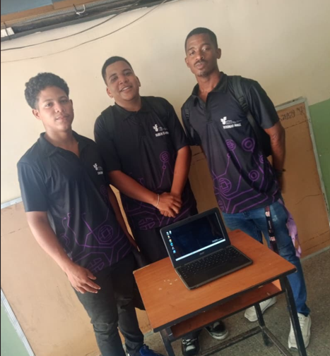
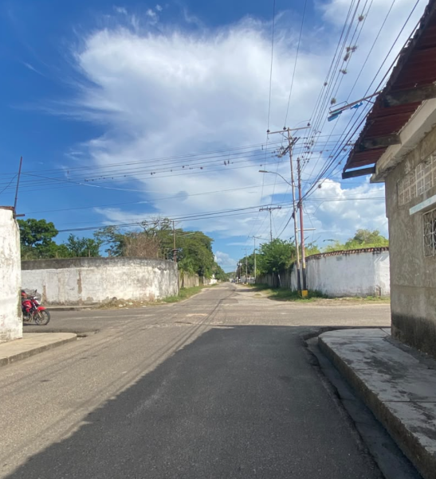
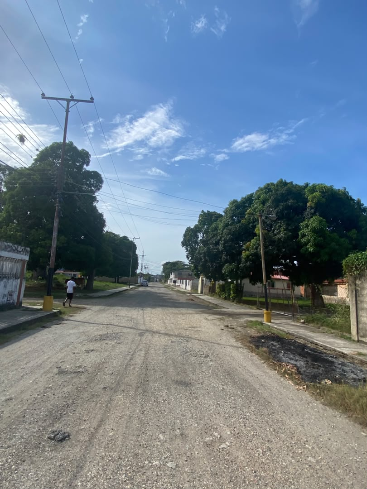
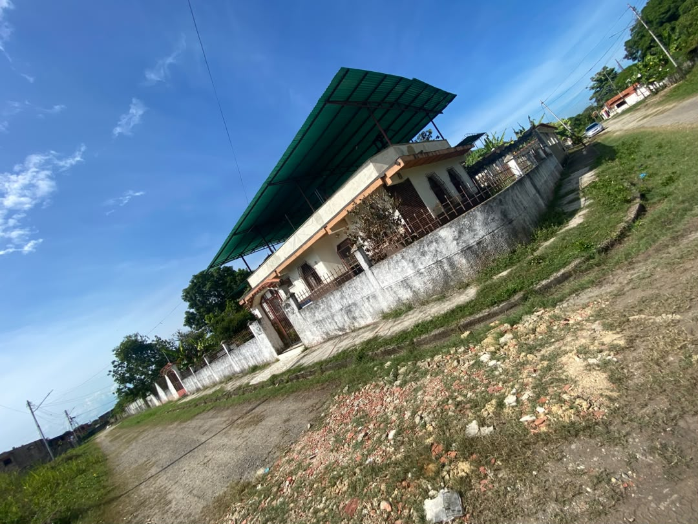
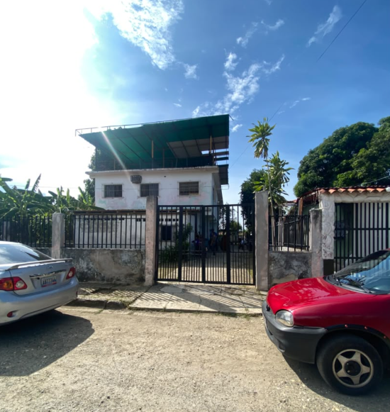
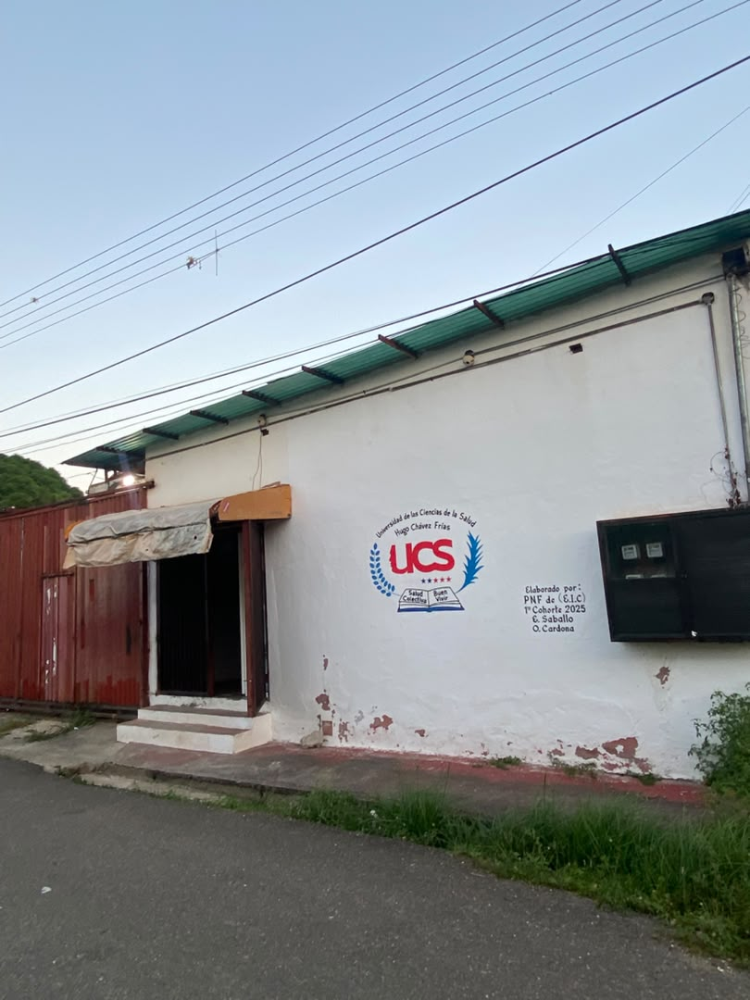
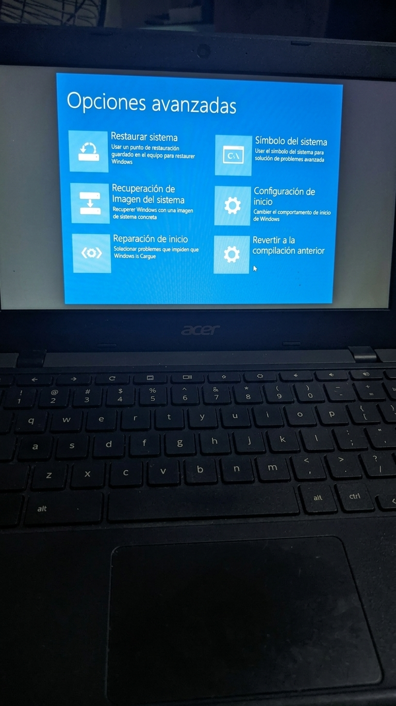
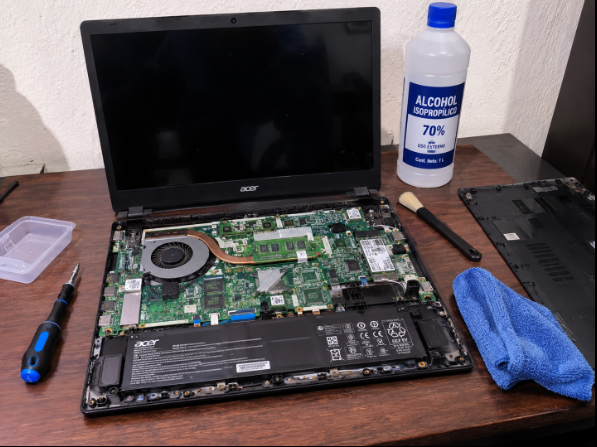
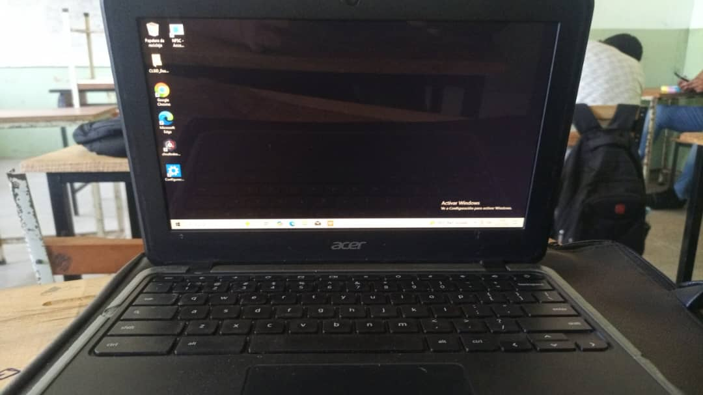

La comunidad
Conoce la historia, características y necesidades de la Urbanización Las Manuelas.
Ubicada en la Urbanización Las Manuelas, Municipio Andrés Bello, Estado Miranda.

Conoce el proceso desde el estudio de la comunidad hasta la ejecución y los resultados del mantenimiento.
Conoce la historia, características y necesidades de la Urbanización Las Manuelas.
Descubre las condiciones de la laptop ACER y el problema identificado.
Conoce las actividades realizadas, el mantenimiento y sus resultados.
Un acercamiento a la historia, el entorno y las características de la comunidad donde se desarrolla el proyecto.
Las Manuelas pasó de ser un terreno dedicado a la agricultura y ganadería a convertirse en una urbanización residencial.
Está situada en San José de Barlovento, Municipio Andrés Bello, estado Miranda.
Cuenta con espacios de atención de salud, formación musical y organización comunal.
San José de Barlovento, estado Miranda.
Abrir ubicación en Google Maps ↗Algunos lugares y servicios presentes en el entorno comunitario.





Diagnóstico de las condiciones físicas y lógicas de la computadora portátil ubicada en la comunidad.

Se identificó acumulación de polvo en el teclado, puertos y rejillas de ventilación.
El sistema presentaba lentitud, archivos acumulados y consumo elevado de memoria.
Era necesario realizar mantenimiento preventivo físico y lógico para mejorar su funcionamiento.
Actividades desarrolladas para recuperar y optimizar el funcionamiento de la computadora portátil.
Revisión del estado físico, los componentes y el sistema operativo del equipo.
Organización de las actividades y selección de herramientas e insumos.
Limpieza de las áreas externas accesibles, teclado, puertos y rejillas de ventilación.
Respaldo de archivos, formateo e instalación limpia de Windows 10.
Instalación de Microsoft Word y Canva, y configuración de la impresora.
Registro del estado del equipo y una vista ilustrativa de sus componentes internos.


Se obtuvo una mejora en la fluidez del sistema, limpieza de las áreas accesibles y disponibilidad de herramientas esenciales para trabajos digitales.
Explora las fotografías de la comunidad y del mantenimiento de la computadora. Cada imagen incluye una breve descripción.
Acceso a la Urbanización Las Manuelas.